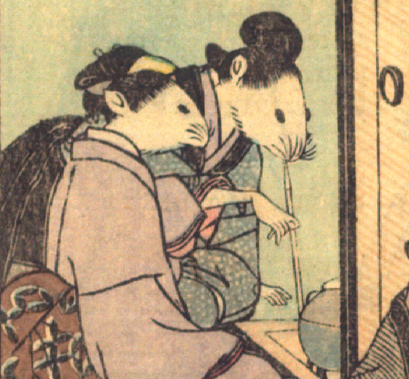

女の鼠。髪を結い、灰青色の着物をまとって座っている。前に屈んで、右手に煙管を持ち、吸い口をくわえて、雁首を囲炉裏に近づけている。手は人間のものである。囲炉裏には茶釜のようなものが載っている。
著作者：David Thompson／出典：親書誌：U426_nichibunken_0112：Nedzumi no Yome-Iri／日付：2006／資源識別子：U426_nichibunken_0112_0004_0002
Copyright (c)2010- International Research Center for Japanese Studies, Kyoto, Japan. All rights reserved.